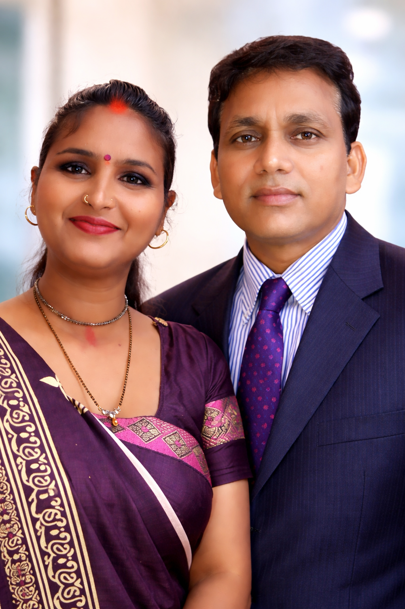

About Us.

Mr.Sunil Kumar Goswami
Mrs. Sudha Giri
About A2Z Infotech
A2Z Infotech was founded in 2023 by Mr. Sunil Kumar Goswami with the vision of providing quality computer education at affordable fees to students, especially those from economically weaker sections of society. The institute was established with the aim of spreading digital literacy and empowering individuals with modern computer skills.
Mrs. Sudha Giri, his wife, has played a vital role in supporting and encouraging this vision. With her continuous cooperation and dedication, A2Z Infotech was able to take a physical and operational form and begin its journey of educating students.
Our Mission
Our mission is to provide affordable, practical, and high-quality computer education so that students from all backgrounds can develop strong technical skills and improve their career opportunities in the digital world.
Our Vision
Our vision is to become a trusted and leading computer training institute that empowers students with modern technology knowledge, practical skills, and confidence to succeed in their professional lives.
Why Choose Us
- Affordable course fees
- Practical computer training
- Experienced guidance
- Student friendly learning environment
- Job-oriented courses